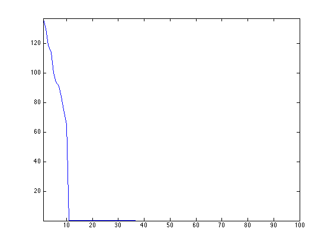
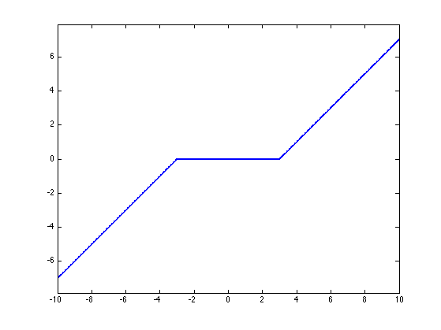
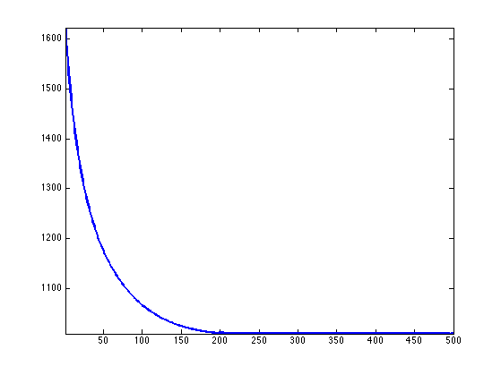
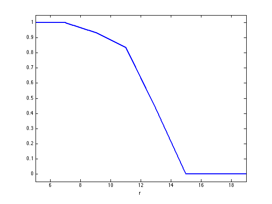
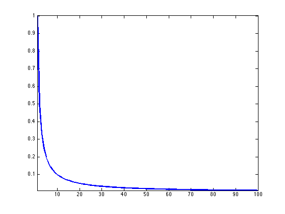
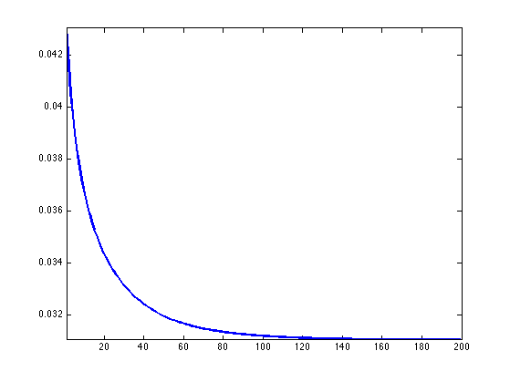

Matrix Completion with Nuclear Norm Minimization
This numerical tour explore the use of convex relaxation to recover low rank matrices from a few measurements.
Contents
Special thanks to Jalal Fadili for useful comments and advices.
Rank and Singular Values
The singular value decomposition of a matrix \(x \in \RR^{n \times n}\) reads \[ x = U S V^* = \sum_{i=0}^{n-1} s_i u_i v_i^* \] where \(S = \diag(s_i)_i\) is the diagonal matrix of singular values that satisfies \[ s_0 \geq \ldots s_{r-1} > 0 \qandq \forall i \geq r, \: s_i=0\] where \(r=\text{rank}(x)\) is the rank of the matrix \(x\). To emphasis the dependancy between the decomposition and \(x\) we will write \(s_i(x), U(x), S(x), V(x)\) when needed.
Note that the matrices \(U,V\) are orthogonal, and the \((u_i)_i\) and \((v_i)_i\) are the columns of these matrices.
Size \(n \times n\) of the matrix.
n = 100;
Rank \(r\) of the matrix.
r = 10;
Generate a random matrix \(x_0 \in \RR^{n \times n} \) of rank \(r\), as the product of Gaussian vectors.
x0 = randn(n,r)*randn(r,n);
Display the singular values. Only \(r\) are non zero, and they are clustered around the value \(n\).
plot(svd(x0), '.-'); axis tight;
Matrix Completion
We consider here a simple measurement operator \(\Phi : \RR^{n \times n} \rightarrow \RR^P\) that retains only a sub-set of the entries of the matix. \[ \Phi x = ( x_i )_{i \in I} \] where \(\abs{I}=P\) is the set of extracted indexes.
One can of course consider other linear measurement operators.
Number \(P\) of measurements.
P = round( n*log(n)*r*1 );
We use here a set of random sampling locations.
I = randperm(n*n); I = I(1:P); I = I(:);
Measurement operator and its adjoint.
Phi = @(x)x(I); PhiS= @(y)reshape( accumarray(I, y, [n*n 1], @sum), [n n]);
Measurement \(y=\Phi x_0\).
y = Phi(x0);
The low-rank matrix completion corresponds to the following non-convex minimization. \[ x^{\star} \in \uargmin{\Phi x = y} \text{rank}(x). \]
Noiseless Completion using Douglas Rachford
To obtain fast algorithm, it is possible to convexify the objective function and use the nuclear norm \( \norm{x}_{\star} \) \[ x^{\star} \in \umin{\Phi x = y} \norm{x}_{\star} = \sum_i s_i(x) \] This is a convex problem, that can be solved efficiently, as we show next.
It is shown in
The Power of Convex Relaxation: Near-Optimal Matrix Completion E. J. Candes and T. Tao, IEEE Trans. Inform. Theory, 56(5), 2053-2080, 2009.
that if the columns of \(U(x_0)\) and \(V(x_0)\) have a small enough \(\ell^\infty\) norm, and if \(P \geq C r n \log(n)\) for some absolute constant \(C\) then \(x^\star=x_0\).
This minimization can be written as \[ \umin{ x } F(x) + G(x) \qwhereq \choice{ F(x) = i_{\Cc}(x), \\ G(x) = \norm{x}_{\star}. } \] where \(\Cc = \enscond{x}{\Phi x =y}\).
One can solve this problem using the Douglas-Rachford iterations \[ \tilde x_{k+1} = \pa{1-\frac{\mu}{2}} \tilde x_k + \frac{\mu}{2} \text{rPox}_{\gamma G}( \text{rProx}_{\gamma F}(\tilde x_k) ) \qandq x_{k+1} = \text{Prox}_{\gamma F}(\tilde x_{k+1},) \]
We have use the following definition for the proximal and reversed-proximal mappings: \[ \text{rProx}_{\gamma F}(x) = 2\text{Prox}_{\gamma F}(x)-x \] \[ \text{Prox}_{\gamma F}(x) = \uargmin{y} \frac{1}{2}\norm{x-y}^2 + \ga F(y). \]
One can show that for any value of \(\gamma>0\), any \( 0 < \mu < 2 \), and any \(\tilde x_0\), \(x_k \rightarrow x^\star\) which is a solution of the minimization of \(F+G\).
\[ \text{Prox}_{\gamma F}(x) = \uargmin{y} \frac{1}{2}\norm{x-y}^2 + \ga F(y). \]
The proximal operator of \(F\) is the orthogonal projection on \(\Cc\). It is computed as \[ \text{Prox}_{\ga F}(x) = x + \Phi^*(y-\Phi x). \]
ProxF = @(x,gamma)x + PhiS(y-Phi(x));
The proximal operator of \(G\) is the soft thresholding of the singular values \[ \text{Prox}_{\ga F}(x) = U(x) \rho_\la( S(x) ) V(x)^* \] where, for \( S=\text{diag}(s_i)_i \) \[ \rho_\la(S) = \diag\pa{ \max(0,1-\la/\abs{s_i}) s_i }_i. \]
Define \(\rho_\la\) as a diagonal operator.
SoftThresh = @(x,gamma)max(0,1-gamma./max(abs(x),1e-10)).*x;
Display it in 1-D.
t = linspace(-10,10,1000); h = plot(t, SoftThresh(t,3)); axis tight; axis equal; set(h, 'LineWidth', 2);
Define the proximal mapping \(\text{Prox}_{\ga F}\).
prod = @(a,b,c)a*b*c; SoftThreshDiag = @(a,b,c,gamma)a*diag(SoftThresh(diag(b),gamma))*c'; ProxG = @(x,gamma)apply_multiple_ouput(@(a,b,c)SoftThreshDiag(a,b,c,gamma), @svd, x);
Compute the reversed prox operators.
rProxF = @(x,gamma)2*ProxF(x,gamma)-x; rProxG = @(x,gamma)2*ProxG(x,gamma)-x;
Value for the \(0 < \mu < 2\) and \(\gamma>0\) parameters. You can use other values, this might speed up the convergence.
mu = 1; gamma = 1;
Exercice 1: (check the solution) Implement the Douglas-Rachford iterative algorithm. Keep track of the evolution of the nuclear norm \(G(x_k)\).
exo1;
In this case, the matrix is recovered exactly, \(A^\star=A_0\).
disp(['|A-A_0|/|A_0| = ' num2str(norm(x-x0)/norm(x), 2)]);
|A-A_0|/|A_0| = 4e-07
Exercice 2: (check the solution) Compute, for several value of rank \(r\), an empirical estimate of the ratio of rank-\(r\) random matrice than are exactly recovered using nuclear norm minimization.
exo2;
Noisy Completion using Forward-Backward
In the case where \(x_0\) does not have low rank but a fast decreasing set of singular values \( (s_i(x_0))_i \), and if one has noisy observations \(y = \Phi x_0 + w\), where \(w \in \RR^P\) is some noise perturbation, then it makes sense to consider a Lagrangian minimization \[ \umin{x \in \RR^{n \times n}} \frac{1}{2}\norm{y-\Phi x}^2 + \la \norm{x}_{\star} \] where \(\la>0\) controls the sparsity of the singular values of the solution.
Construct a matrix with decaying singular values.
alpha = 1; [U,R] = qr(randn(n)); [V,R] = qr(randn(n)); S = (1:n).^(-alpha); x0 = U*diag(S)*V';
Display the spectrum.
clf; h = plot(S); axis tight; set(h, 'LineWidth', 2);
Number of measurements.
P = n*n/4;
Measurement operator.
I = randperm(n*n); I = I(1:P); I = I(:); Phi = @(x)x(I); PhiS= @(y)reshape( accumarray(I, y, [n*n 1], @sum), [n n]);
Noise level.
sigma = std(x0(:))/5;
Measurements \(y=\Phi x_0 + w\) where \(w \in \RR^P\) is a Gaussian white noise.
y = Phi(x0)+sigma*randn(P,1);
It is possible to find a minimizer of the Lagrangian minimization problem using the forward-backward method: \[ x_{k+1} = \text{Prox}_{\ga \lambda G}\pa{ x_k - \ga\Phi^*(\Phi x_k - y) }. \] where \(\ga < 2/\norm{\Phi^* \Phi} = 2. \)
Value for \(\lambda\).
lambda = .01;
Exercice 3: (check the solution) Implement the forward-backward method, monitor the decay of the enrgy minimized by the algorithm.
exo3;
Exercice 4: (check the solution) Plot the error \(\norm{x^\star-x_0}/\norm{x_0}\) as a function of the mutiplier \(\lambda\).
exo4;